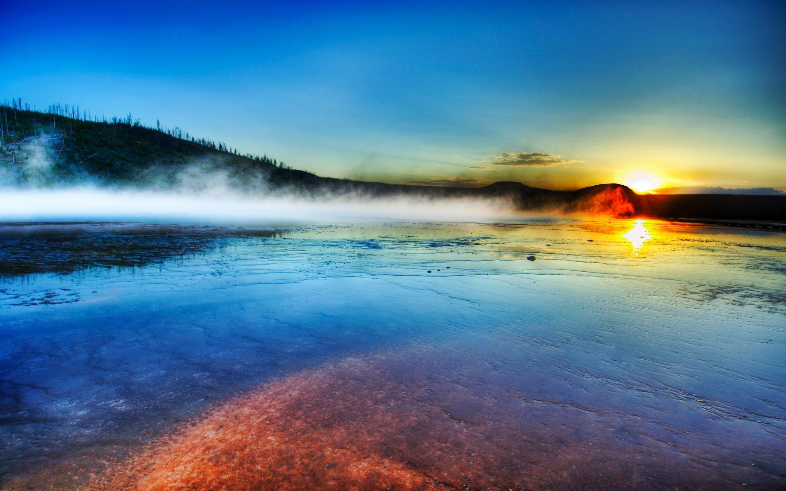
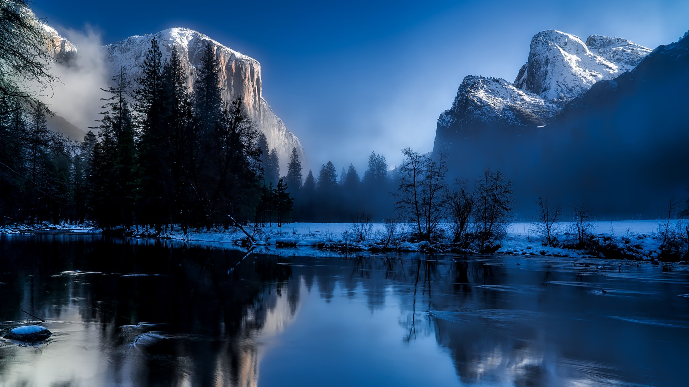
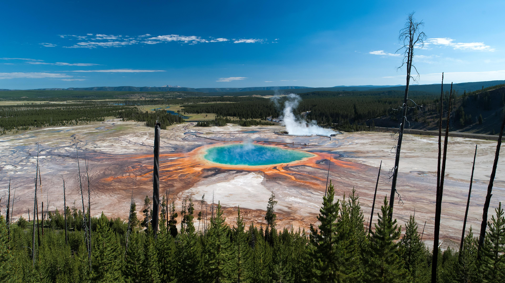

Yellowstone adalah taman nasional pertama di Amerika Serikat. Taman ini terkenal dengan keanekaragaman satwa dan geotermalnya, terutama geiser Old Faithful yang sangat terkenal. Yellowstone memiliki berbagai jenis ekosistem, tetapi yang paling mendominasi adalah ekosistem subalpine. Taman Nasional Yellowstone juga merupakan bagian dari hutan South Central Rockies.
Taman ini memiliki luas sekitar 8.983 km² dan terdapat berbagai elemen alam seperti danau, ngarai, sungai, dan pegunungan. Danau Yellowstone adalah salah satu danau dataran tinggi terbesar di Amerika Serikat. Danau ini terletak di kaldera Yellowstone, yang merupakan supervolcano terbesar di dunia.
Kaldera Yellowstone dikenal akibat geisernya yang megah. Yang paling terkenal adalah Old Faithful yang terkenal akibat semburan erupsinya yang teratur. Pada daerah tersebut juga kaya akan sumber panas bumi, seperti mata air panas dan kolam lumpur yang mendidih. Hal tersebut diakibatkan oleh aktivitas magma di bawah permukaan tanah.
Akibat jumlah energi yang sangat besar di kaldera, letusannya dapat menghasilkan dampak yang memengaruhi global. Hal tersebut dapat mempengaruhi iklim global dengan melepaskan jumlah besar abu ke atmosfer. Meskipun risiko terjadinya letusan cukup rendah, studi masih dilakukan untuk memahami aktivitas geologi di kaldera tersebut.
Pohon Aspen memiliki daun bundar berwarna hijau cerah yang berubah menjadi warna kuning dan oranye yang indah pada musim gugur.
Lupine adalah tanaman berbunga yang sering ditemukan di padang rumput alpine dan dataran tinggi Yellowstone. Mereka memiliki bunga berbentuk kerucut yang indah dan berbagai warna, termasuk biru, ungu, dan merah muda.
Hutan konifer yang luas mendominasi banyak area di Yellowstone. Jenis-jenis pohon konifer yang umum di sini meliputi pohon pine, cemara, dan spruce. Pohon-pohon ini menjadikan hutan-hutan Yellowstone sangat indah dan penting untuk ekosistem yang ada.
Bergenia adalah tumbuhan berdaun lebar dengan bunga berwarna pink yang tumbuh di sekitar mata air panas dan kolam geotermal. Mereka tahan terhadap kondisi ekstrem seperti suhu tinggi dan asam yang tinggi.

Indian paintbrush adalah bunga liar dengan bunga berbentuk sikat berwarna merah dan oranye yang mencolok. Bunga ini sering ditemukan di padang rumput dan area dataran tinggi Yellowstone.
Sagebrush adalah semak yang umum di daerah padang rumput Yellowstone dan merupakan makanan penting bagi beberapa hewan seperti kuda liar dan rusa.
Bison adalah simbol ikonik Taman Nasional Yellowstone. Ini adalah hewan terbesar di Amerika Utara dan sering berkeliaran di padang rumput dan lembah di taman ini.
Yellowstone adalah salah satu tempat terbaik untuk melihat beruang grizzly. Pengunjung yang beruntung mungkin dapat melihat mereka mencari makanan di taman.
Serigala abu-abu adalah hewan liar yang mengesankan yang dapat ditemukan di Yellowstone. Mereka terkadang terlihat berburu atau bermain di dalam taman.
Rusa Rocky Mountain adalah hewan besar yang sering ditemui di hutan-hutan dan padang rumput Yellowstone. Mereka sering berkeliaran dalam kelompok besar.
Coyote adalah pemangsa kecil yang sering terlihat di Yellowstone. Mereka mencari makanan, terutama hewan pengerat, dan sering berkeliaran di padang rumput dan dataran tinggi.

Meskipun lebih jarang terlihat daripada beberapa spesies lain, singa pegunungan juga ada di Yellowstone. Mereka lebih sering terlihat di bagian-bagian yang lebih terpencil dari taman.